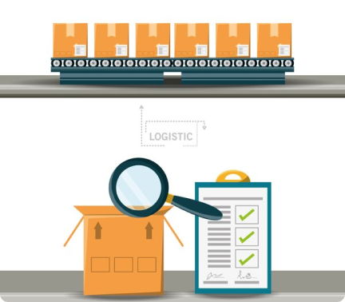
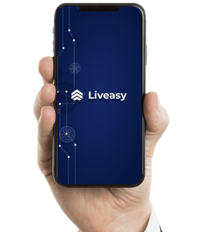

The Benefits of Automated Indent Management for Procurement
INTRODUCTION
Procurement is the process of acquiring goods and services for a business. It is a critical function that can have a significant impact on a company's bottom line. In recent years, there has been a growing trend towards automating procurement processes. This is due to the many benefits that automation can offer, such as increased efficiency, accuracy, and visibility.
The Problem with Manual Indent Management
Traditionally, indent management has been a manual process. This means that indents are created, approved, and tracked manually. This can be a time-consuming and error-prone process. It can also lead to a lack of visibility into the procurement process.

The Solution: Automated Indent Management

Automated indent management is a solution that can help businesses to overcome the challenges of manual indent management. It is a software solution that automates the entire indent management process, from creating indents to approving them and tracking their progress.
How Automated Indent Management Can Benefit Businesses
Automated indent management can offer businesses a number of benefits, including:
- Increased efficiency: Automated indent management can help businesses to significantly reduce the time and effort required to manage indents. This frees up time for employees to focus on other tasks, such as strategic planning.
- Increased accuracy: Automated indent management can help to reduce the risk of errors in the indent management process. This is because the software validates data and ensures that all indents are complete and accurate before they are approved.
- Reduced costs: Automated indent management can help businesses to reduce costs associated with indent management, such as the cost of labor and errors.
How Liveasy Can Help
Liveasy is a leading provider of automated indent management solutions. Our software can help businesses to improve the efficiency, accuracy, visibility, and compliance of their indent management processes. We offer a variety of features and benefits, including:
- Real-time visibility: Our software provides real-time visibility into the indent management process, so you can track the progress of indents and identify any potential problems early on.
- Automated approvals: Our software can automate the approval process, so you can approve indents quickly and easily.
- Audit trail: Our software maintains a comprehensive audit trail, so you can track all activity related to indents.
- Compliance: Our software can be configured to enforce specific rules and regulations, so you can ensure that your indent management processes are compliant.